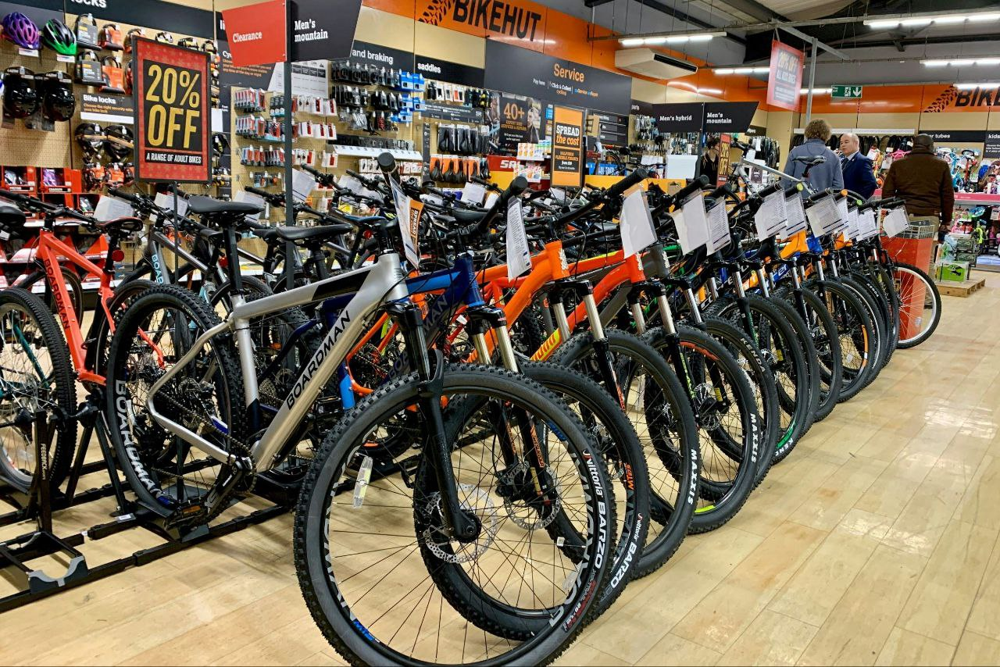

Using SQL, I performed a full data cleaning and transformation pipeline on the Nashville Housing dataset. I handled missing values, standardized data formats, and restructured key columns to ensure data integrity for future analysis..
This project utilized SQL to perform an in-depth data exploration of global COVID-19 datasets. I joined two tables to calculate key metrics, such as death percentages and infection rates. Using advanced concepts like CTEs and Views, I prepared the data for further analysis.
Developed a dynamic Power BI dashboard to analyze data professional survey data, uncovering key insights on salary trends, job satisfaction, and demographics. The project demonstrates the ability to translate complex data into clear, impactful visualizations for strategic decision-making.

I conducted a detailed analysis of bike sales data in Excel to uncover key customer trends. The project focused on leveraging Pivot Tables to summarize and extract insights on demographics, income, and purchasing habits. This showcases a strong ability to use Excel as a powerful tool for data analysis and reporting.
A dynamic and interactive dashboard built in Excel to analyze coffee sales data. This project showcases proficiency in data visualization and dashboard design, providing key insights into sales performance, customer trends, and regional profitability.